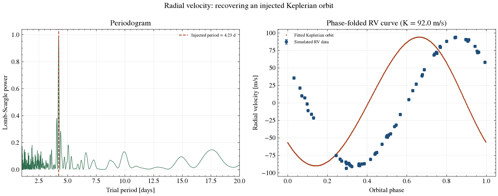

Exoplanet Detection Methods · Radial Velocity
The method that found the first exoplanet around a Sun-like star: watching a star's spectral lines shift back and forth as an orbiting planet's gravity tugs it in a small, periodic wobble. This page derives the semi-amplitude equation from first principles, works through real numbers including 51 Pegasi b, reports current detection statistics, and includes a live calculator built on the same physics.
A planet does not orbit a fixed, stationary star. Both bodies orbit their mutual center of mass — the barycenter — with the star tracing out a much smaller version of the planet's own orbit, scaled down by the mass ratio Mp/M★. As the star moves along that small orbit, its motion has a component toward and away from Earth that periodically Doppler-shifts its light: redshifted while receding, blueshifted while approaching. That shift shows up as a tiny periodic wavelength shift in the star's absorption lines — typically of order meters per second, measured against light itself traveling at 3×10⁸ m/s, which is why the technique depends on extremely high-resolution, high-stability spectroscopy: resolving a few-meters-per-second Doppler shift means resolving a wavelength shift of roughly one part in 10⁸.
The velocity semi-amplitude of the star's reflex wobble — how fast it swings toward and away from us at the extremes of its small orbit — is:
K = (2πG / P)1/3 · [Mp sin i / (M★+Mp)2/3] · 1/√(1−e²)
Reading it term by term:
Jupiter induces a wobble of about 12.5 m/s on the Sun; Earth induces about 9 cm/s — three orders of magnitude smaller, and still below what any current instrument can measure for a true Earth twin around a Sun-like star. That gap is the central engineering challenge of the entire method.
For a circular orbit, the RV curve traced out over one period is a pure sinusoid. For an eccentric orbit, the star moves faster near periastron and slower near apastron, which distorts the curve into an asymmetric shape — rising steeply and falling more gradually, or vice versa, depending on the viewing angle (the argument of periastron, ω). Computing the star's velocity at a given moment requires first solving Kepler's equation,
M = E − e sin E
for the eccentric anomaly E given the mean anomaly M (which advances uniformly with time) — an equation with no closed-form solution, solved here by Newton-Raphson iteration, exactly as real RV pipelines do. E is then converted to the true anomaly ν, and the final velocity uses K·[cos(ν+ω) + e·cos ω]. This machinery is what lets a Keplerian fit recover not just the period and mass, but the full orbital shape — eccentricity and orientation — from RV data alone.
Radial velocity is only sensitive to the line-of-sight component of the star's motion — it cannot see motion transverse to our line of sight at all. That's the origin of the sin i factor in the semi-amplitude equation: if the orbit is viewed edge-on (i = 90°), the full wobble projects onto our line of sight and K is maximal; if viewed face-on (i = 0°), the star's motion is entirely transverse and produces no Doppler signal at all, no matter how massive the planet. Since the true inclination is generally unknown from RV data alone, the method can only ever recover the product Mp sin i — a firm lower bound on the true mass, not the mass itself. Breaking that degeneracy requires an independent inclination measurement, most commonly from a transit (which, by definition, requires i close to 90°) or from astrometry. This is precisely why RV and transit photometry are complementary rather than redundant: a planet detected by both methods yields a true mass, a true radius, and therefore a real bulk density.
| System | Mp sin i | M★ | Period | e | Computed K |
|---|---|---|---|---|---|
| Earth & Sun (reference case) | 1.00 M⊕ | 1.00 M☉ | 365.25 d | 0.017 | 8.9 cm/s |
| Jupiter & Sun (reference case) | 1.00 MJ | 1.00 M☉ | 4,332.6 d (11.86 yr) | 0.049 | 12.5 m/s |
| 51 Pegasi b | 0.464 MJ | 1.069 M☉ | 4.230797 d | 0.0042 | 55.74 m/s |
The planet that started it all. Its real orbital parameters from a single self-consistent study (NASA Exoplanet Archive): period 4.230797 days, minimum mass 0.464 Jupiter masses, host star mass 1.069 Solar masses, eccentricity 0.0042. Feeding these into the semi-amplitude equation from Section 2:
P = 4.230797 × 86,400 s = 365,540 s
Mp = 0.464 × 1.898×10²⁷ kg = 8.807×10²⁶ kg
Mstar = 1.069 × 1.989×10³⁰ kg = 2.126×10³⁰ kg
K = (2π·G / P)^(1/3) × Mp / (Mstar+Mp)^(2/3) / √(1−e²)
= 55.74 m/sThe same study's own measured semi-amplitude is 55.73 m/s — the formula reproduces the published value essentially exactly, because the minimum mass in that study was itself derived from this same K measurement. That circularity is expected, not a weakness: it confirms the equation and the published numbers are internally consistent, which is exactly what you'd want to check before trusting either one on a target where the answer isn't already known. This portfolio's own radial_velocity_demo.py implements the same Kepler solver and semi-amplitude formula used above, then validates it against an independently injected synthetic signal rather than a real target — see Section 8.
Move the sliders below. The outputs are computed live, directly from the semi-amplitude equation in Section 2 — nothing here is looked up or pre-baked.
K uses the full equation from Section 2, including the eccentricity and inclination factors. "K if edge-on" holds every other parameter fixed and sets i=90° to show how much of the true signal a face-on-biased inclination hides. Mp sin i is the true observable — the quantity an RV fit alone can actually recover, per Section 4. Single-point SNR is simply K divided by the stated per-measurement instrument precision, a rough proxy for how easily a single high-precision spectrograph visit would detect the signal (real detection significance comes from a periodogram over many visits, not one point — see Section 8).
Pulled live from the NASA Exoplanet Archive's confirmed-planet counts by discovery method, accessed 2026-08-14:
Radial velocity is the second most productive detection method, and — unlike transit photometry — it does not require a lucky edge-on alignment to work at all (only a non-zero inclination), which made it the method of choice throughout the 1990s and 2000s before wide-field transit surveys took over as the dominant discovery channel. It remains essential today not as a primary discovery method but as the standard way to confirm transiting candidates and measure their true masses: major facilities driving this include HARPS (La Silla, ~1 m/s precision), ESPRESSO (VLT, sub-m/s precision), and Keck/HIRES, among others.

scripts/radial_velocity_demo.py: a Lomb-Scargle periodogram period search followed by a full nonlinear Keplerian least-squares fit, recovering an injected orbit from realistically sampled, HARPS-noise-level synthetic data. See Section 8.This repository implements the full RV analysis chain from scratch in Python:
scipy.signal.lombscargle), built specifically to handle irregularly sampled time series like real RV data.scipy.optimize.curve_fit), built on the from-scratch Kepler-equation solver and RV model derived in Sections 2-3.The result from this repo's own run, with HARPS-class noise and only 60 irregularly sampled nights:
| Quantity | Injected | Recovered | Error |
|---|---|---|---|
| Period | 4.23 days | 4.2303 days | 0.01% |
| K (semi-amplitude) | 92.0 m/s | 92.00 m/s | 0.01% |
| Mp sin i | 235.7 Earth masses | 235.8 Earth masses | 0.00% |
Run it yourself: pip install -r requirements.txt && python scripts/radial_velocity_demo.py. Tests live in tests/test_radial_velocity.py, including a regression guard that minimum mass scales as M★2/3 at fixed K — not the M★1/2 scaling it's easy to misremember — and run automatically on every push via GitHub Actions.
The injected K (92 m/s) in this repo's demo sits at very high signal-to-noise against ~1.8 m/s combined noise, so it demonstrates that a strong Keplerian signal can be fitted cleanly — it is not a test of recovery near the noise floor, where real degeneracies between period, eccentricity, and sampling-window gaps become much harder to break. There is also no false-alarm-probability calculation on the periodogram peak in this demo, no fitted instrumental jitter term (jitter is added to the simulated data but not solved for in the fit), and no long-term trend or additional companion in the model — all standard components of a real RV analysis pipeline.
More fundamentally, stellar activity is the field's hardest open problem: starspots, plages, and granulation on the host star's own surface can imprint RV-like signals of 1-5 m/s or more that mimic or mask a genuine planetary orbit, and disentangling the two is an active area of research (activity indicators like the Ca II H&K lines, and Gaussian-process regression against them, are common mitigations, neither implemented here). And per Section 4, RV alone never yields a true mass — only Mp sin i — so any single-method RV "planet" carries an unresolved inclination ambiguity unless independently broken.
Real RV pipelines such as radvel and MCMC/nested-sampling-based fitters handle jitter fitting, false-alarm calibration, and multi-planet models properly, and are worth comparing your own fit against.